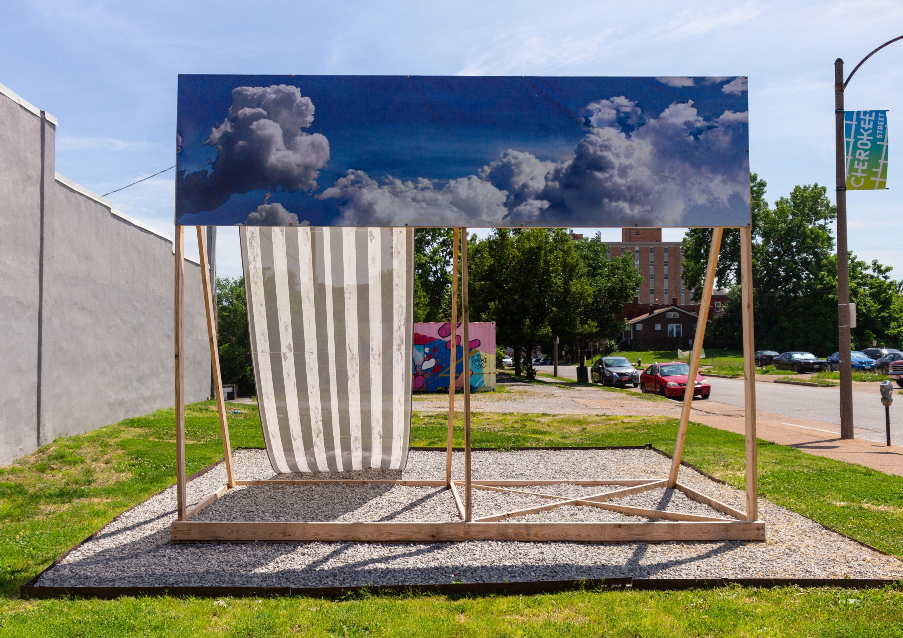
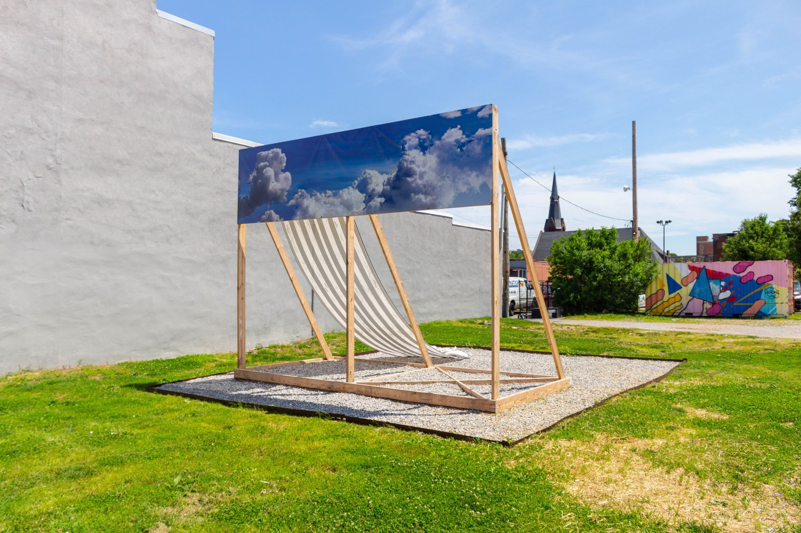

Studio
Curatorial
Writing
JACK RADLEY
About
CV
Play!
Reviews
From Punk Clubs to Panaderías: Counterpublic, An Embedded Triennial

Bruce Nauman: Atomizing Movement into Touch
Beth Letain: ‘The Company She Keeps’ at Peres Projects
Diana Thater at The ICA Watershed: Spectacular Images, Diluted Messages

Dismantling the Domestic: Mona Hatoum’s ‘Terra Infirma’ at Pulitzer Arts Foundation
Austin Lee’s ‘Tomato Can’ at Peres Projects
Dani Gal’s ‘Hegemon’ at Berlinische Galerie
Artist as Informant: ‘Evidentiary Realism’ at Nome
The Frail Construction of Icon: Isa Genzken’s ‘Issie Energie’ at König Galerie
To Hear Whispers in a Silent Space: ‘Shifting Perspectives’ at ZKR
‘Never Ending Stories’ at Kunstmuseum Wolfsburg
From Bar to Emblem: Emmanuel Tussore’s ‘Study for Soap’
More
Less
Interviews
To Survive on This Shore: An Interview with Jess T. Dugan
Claudia Comte Works Only for Her Work
On Peers and Publishing: An Interview with Mark Dion
Art as Ecosystem: An Interview with Rashin Fahandej
A New Dialogue with Ajarb Bernard Ategwa
The Herd Mentality of House Parties and Hedonism: An Interview with Canyon Castator
Human Nature: An Interview with Anna Rún Tryggvadottir
‘We Carry a Lot in Our Wombs’: An Interview with Tabita Rezaire
Ritual of Dreams: An Interview with Apichatpong Weerasethakul
‘Stop making sense and start sensing!’: An Interview with Cibelle Cavalli Bastos
‘The Philosophy of the Traitor: Sislej Xhafa’s ‘Shadow of Curls’ at Blain | Southern
More
Less
Studio Visits
Tschabalala Self
Corinne Wasmuht
Klara Hobza
ON/OFF
More
Less